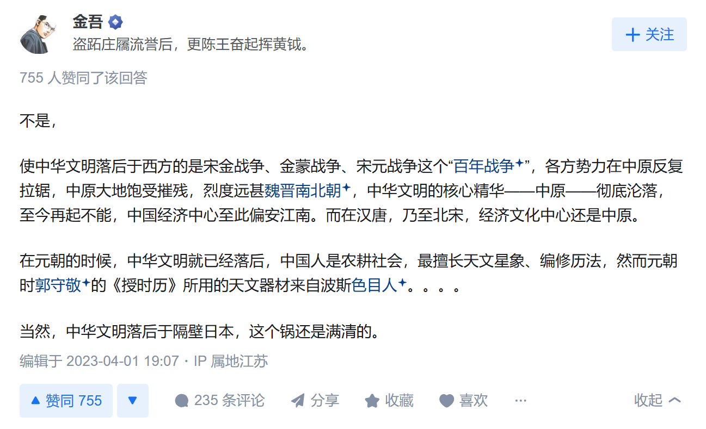
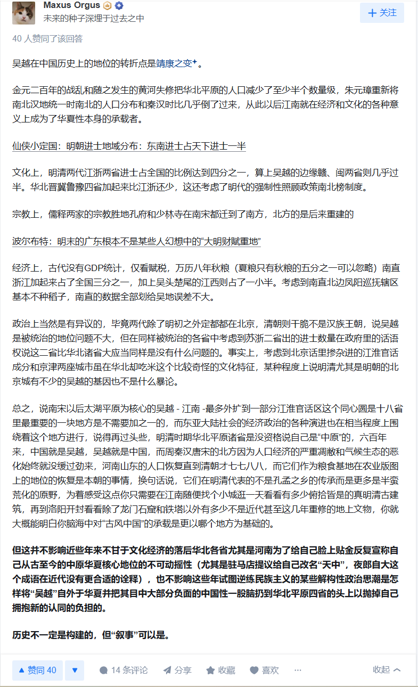

# 1644 史观介绍
1644 史观是非常新颖而且有见地的史观，解释了很多 1840 史观不能解释的事情，比如 闭关锁国导致落后，但闭关锁国的核心其实不是防洋而是防汉、为什么到 1860s 才想到改革，最后两次近代化改革都以失败收场等等。
不过个人认为，其实影响最大的是靖康史观（不用数字由于一些特殊原因）。这里简单讲一下：
- 周边民族的技术能力和制度建设能力大大提高了，建立了稳定中央集权国家，具备了抗拒汉化和改变原汉地文化的能力
- 同时开启依靠几万人的基本盘就能统治大量汉人的时代，不再需要与汉人实力派联合控制（这最后往往导致汉化，或者实权落回汉人手中），直接通过奴役和掠夺养活基本盘就可以了
- 汉人的正规军事力量衰弱，并且大量出现未战先降或者上位者出卖国族利益求自保的现象。外族甚至因此能够无视地形的阻拦。仅以靖康为例，决战是在山河表里的山西打的；开封沦陷后第二年彻底丢掉关东；第三年金军搜山检海，首次（在尚未充分汉化的情况下）打过长江，到江南和江西去；第四年整个秦陇沦陷了。对比一下前面的永嘉。
- 外族的在军事上的打击能力增强了，战争对社会经济的破坏增强了。这导致幽燕以外的整个北方地区，也就是华夏的早期核心，毁灭和退化。虽然有人说，唐以后中原关中气候变冷变干，加上过度开发，南方更适合生产生活。但是北方虽然会衰落，也不至于这么迅速和彻底。
- 汉人从普世民族时代进入地区民族时代，汉唐开拓的空间基本丢失了。到了明初，较为密集的分布区甚至只局限在江浙和江西。明朝实际上是在给华北和四川再汉化。
- 原本观念相对统一的汉人，由于被这种文明化的外族统治，出现了认同上的分歧。典型如「我金之亡，比汝二帝如何」。以至于恢复华夏后还要尽力弥合。到现在其实还有遗留。
- 前面几点，导致靖康史观的一个产物是，汉民族意识现代化阶段的「中原」就是江南，江南就是「中原」。现代中原和关中是从明初的废土上重建。实际上经历了断代。时间可以精准定位到宋金元，诸位印象中河南陕西最后一次成为古代史焦点是哪个朝代。
- 中原和关中的辉煌成了遥远的追忆，其实和现在是两个世界。目前汉族各民系的形象从宋以来特别是明清，甚至就是清末开始塑造的。
- 由于江南特殊的环境，产生的文化倾向偏安主义、投降主义、地域主义。缩边弃地甚至弃民的现象开始被广为接受。同时南方其他地区也受不同程度破坏，导致江浙一家独大
- 同时又有做题内卷，依附体制，崇拜绩效的保进步守倾向。文化保守力和自组织能力严重萎缩。不仅难以包容外来文化，其实对内部的多样性也缺少包容了。明末似乎有扭转的苗头，但是被 1644 打断。
- 导致明代以来，尽管闽粤和西南地区成了扩张的前哨，前进方向指向了东南亚，但是这些往往被视作不入流之物，得不到足够重视。有海洋性开拓思维的闽粤汉人长期游离主流之外。
- 靖康以后政经文教有话语权的就幽燕和江南两极，其他地方都是背景板，接受来自这两个地方的凝视。这就是山河四省概念的来源。包括幽燕的基层也被无视。同理，权利和财富集中到这两极，又进一步削弱汉人的综合应变能力，间接导致了 1644。
- 还导致产生了「汉地十八省」这种想法。不说交州乐浪，辽东、河套、云南都是非常古老的汉地。在西域存续时间最长的民族其实是汉人。
- 其实对民族文化也失去了自信，特别是对同化能力。当然，这也是和外族文明程度提升相辅相成。黑吉是近代汉人最大开拓成果之一，有人说满化了，要弃地。又说幽州是胡都。
- 不仅不相信自己能同化外族，也不相信自己能改造外来物，没有以我为主的心态了。整天想的都是轻易被改变，你不是纯正，他不是纯正。比如说第四，按照这种说法，难道魏晋南北朝以后，中土就成了南亚国家了吗。当然，这也与外族文明程度提升有关
- 甚至认为不能改变处于不同价值观下的同族，不会求同存异。嘴上说是，做起来根本不是。即使试图改变，也不会方法，要么割肉喂鹰，要么霸王硬上弓。比如对海外华人和某区的闽系汉人的态度。其实靖康前就有了，燕云汉人被契丹统治了两百多年还认同宋的并不少，看看宋廷怎么对待他们。
- 另一方面，丧失这种自信的反面就是前面说的投降主义。一种体现是一边投降一边只会怪自己本有义务保护的弱者为什么不抗争。另一种是出现皈依者狂热，凡事绩效至上，体面至上。遇上满清这种从野蛮状态起步的，还能通过持续斗争，最后重获独立。遇上实力均等或更强的文明，就彻底萎了，比如西北欧冷白人种。
- 这里还要说靖康史观影响下怎么和平级文明打交道。其一被坚船利炮吓尿了，觉得做不出来的文明就一无是处，什么都毫无意义，没有航母核弹芯片就不配活；其二弱者心态掩耳盗铃，不承认有这种平级文明，典型如「华夏领先五千年，欧洲领先两百年」。看不上同是没落文明古国的中东南亚南欧等，甚至还为了反西北欧去否定这些国家的文明成果（现在很多国人认为地中海人散漫费拉，古典文明精神在盎撒。镜像：当年日本侵华时也是说日本人比当代汉人更称得上继承华夏文化）；其三慕强心态，西北欧人一切都是对的。做梦都想世界秩序按照 1884-1918 方式来运转，只恨自己不是列强罢了。
- 说到没落文明古国，实际上他们的没落似乎都是和 11-14 世纪密切相关。最显著就是中东。只有西北欧一点都没有受到这种影响。
# 宋亡的影响

# 江南中心化与北方再汉化
